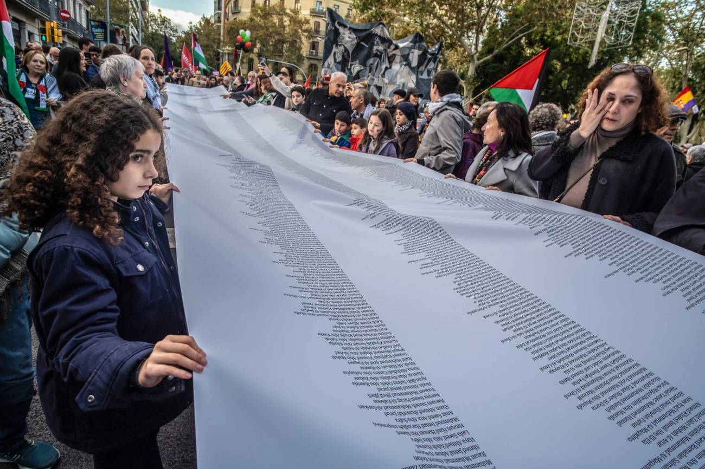
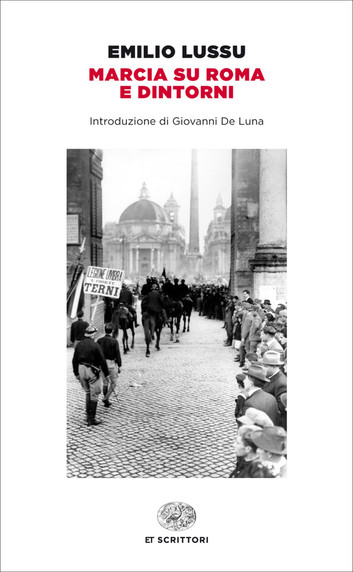

52:40 · 7 OPERE
Vogliamo davvero provare a capire il conflitto arabo israeliano?
Il filo del discorso
Il relatore propone una lettura fortemente polemica del conflitto arabo-israeliano, che collega alla perdita di un linguaggio etico comune. Il percorso parte dal rapporto fra verità, opinione e consenso, passa per la sapienza dei Proverbi e arriva ai numeri delle vittime di Gaza, alla storia del 1948 e alla interpretazione del Corano. Raccomanda Benny Morris e Robert Spencer, cita Eurabia e conclude leggendo un episodio di Marcia su Roma e dintorni come analogia della impunità politica.
Leggi la sintesi completaRiduci la sintesi
La scheda conserva questo itinerario e distingue le tesi del commento dai riscontri documentari. Il dissenso dalla maggioranza non garantisce da solo la verità di una affermazione; una critica statistica non equivale alla dimostrazione che le vittime siano inventate. La negazione generale delle espulsioni palestinesi non corrisponde a ciò che Morris documenta, e la formula secondo cui Israele non avrebbe mai attaccato per primo non regge come affermazione universale. Anche la riduzione del conflitto alla sola religione e il passaggio da singoli episodi a un giudizio su tutti i musulmani richiedono distinzioni. Il tema critico che attraversa il filmato è la verifica delle narrazioni pubbliche: tale criterio viene applicato anche alle fonti e alle analogie scelte dal relatore.
I libri nel discorso

Bibbia
Note sul riferimento
Copertina: San Paolo, 2014 · Nuova Versione dai Testi Antichi · edizione di riferimento
Libro dei Proverbi, sapienza che chiama nelle vie; citazione riconoscibile di Proverbi1,20e seguenti, nessuna edizione specificata.

La consolazione della filosofia
Identificazione probabile
Note sul riferimento
Copertina: Bompiani, 2019
Personificazione della filosofia in Boezio: allusione alla Consolazione, senza titolo pronunciato.

How the Gaza Ministry of Health Fakes Casualty Numbers
Note sul riferimento
Fotografia originale dell’articolo · Paco Freire/SOPA Images/LightRocket via Getty Images: Tablet,7 marzo 2024. Fotografia di apertura originale: manifestanti a Barcellona con un elenco di vittime palestinesi, l’11 novembre 2023. Credito Paco Freire/SOPA Images/LightRocket via Getty Images. Non è una copertina libraria, un grafico della ricerca o un ritratto dell’autore.
Immagine vista interamente e riscontrata nella pagina originale. Fotografia illustrativa della manifestazione, non prova visiva della validità o invalidità dei conteggi. Nessun ISBN attribuito.
Abraham Wyner, University of Pennsylvania e analisi dei numeri di Gaza; testo Tablet7marzo 2024 identificato.

The Critical Qur’an. Explained from Key Islamic Commentaries and Contemporary Historical Research
Note sul riferimento
Copertina: Bombardier Books / Post Hill Press, hardcover ISBN 9781642939491, uscita catalogata 3 maggio 2022, 560 pagine; alcuni cataloghi riportano copyright 2021.
Immagine autentica dell’opera, controllata visivamente; l’edizione di riferimento non è attribuita al filmato.
Robert Spencer, Corano commentato e glosse: volume già verificato nel repertorio, senza attribuire una ristampa precisa.

Corano
Note sul riferimento
Copertina: BUR Classici, edizione aggiornata
Edizione con introduzione, traduzione e commento di Alessandro Bausani, a cura di Layla Mustapha Ammar. Anno della ristampa non dedotto dalla copertina; nessuna edizione attribuita al video.
Corano2:191 citato e discusso; nessuna traduzione o edizione del testo primario identificata.

Eurabia. Come l’Europa è diventata anticristiana, antioccidentale, antiamericana, antisemita
Note sul riferimento
Copertina: Lindau, I Draghi,2024,432 pagine, terza edizione italiana; traduzione del testo di Lucilla Congiu e della nuova prefazione di Antonia Federici. Copertina della edizione 2024, non attribuita al video. Il sottotitolo esprime la tesi dell’autrice, non un fatto adottato dalla scheda.
Immagine autentica dell’opera, controllata visivamente; l’edizione di riferimento non è attribuita al filmato.
Titolo Eurabia esplicito; edizione specifica non identificata nel parlato.

Marcia su Roma e dintorni
Note sul riferimento
Copertina: Opera del 1933. Copertina dell’ebook Einaudi,26 marzo 2014, introduzione di Giovanni De Luna, ISBN 9788858413302. È distinta dalla edizione cartacea 2014, ISBN 9788806221416, registrata nel bollettino ministeriale. La paginazione digitale non è assunta come paginazione del volume letto nel filmato.
Copertina dell’edizione digitale Einaudi distribuita da Kobo; il formato e la ristampa utilizzati nel video non sono identificati. Introduzione di Giovanni De Luna leggibile sull’immagine.
Emilio Lussu e Marcia su Roma e dintorni espliciti; lettura su Facta e violenza fascista.